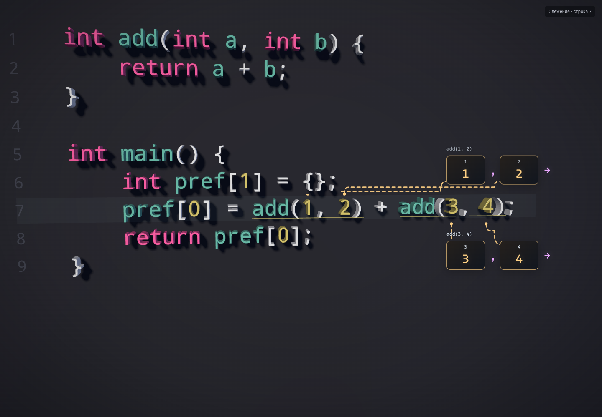
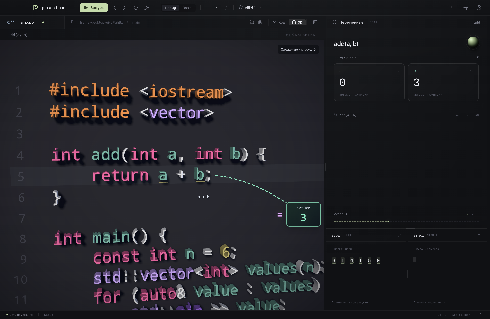

phantom · результаты в 3D
Аргументы в отдельных цветных рамках: толстые пунктирные указатели связывают каждое значение с его местом в коде.

Один подготовленный пример вычислений для сравнения трёх вариантов. Анимации доступны в приложении: настройки → 3D и камера → результаты вычислений.
Посмотреть в окне приложения
